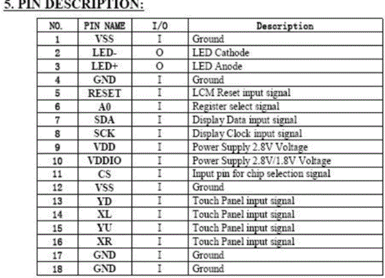
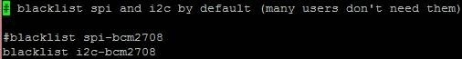
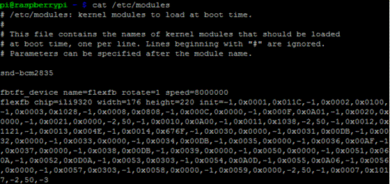

TFT液晶屏Linux下的移植
文章目录
预览
手上有个TFT液晶屏,正好我的树莓派缺一个显示器,所以便萌发了这个移植的想法,以便物尽其用｡以下是效果图:
声明
这个教程只是提供一个思路,不能保证所有的TFT屏幕都能成功｡移植过程涉及许多技术问题,比较繁琐复杂,如果怕麻烦建议还是购买现成的VGA/HDMI显示器｡但是,过程远远比结果更有意义,因为这能提升你的技术水平和解决问题的能力｡
由于事先没有拍照,以下所显示的图片都是事后拍的,不要见怪｡本人技术有限,如果有弄错的地方,欢迎指正｡另外,转载请注明出处
所用的屏幕大小为2.2英寸,分辨率176×220,TFT材质,引脚为18根,主控IC是ili9225b｡其他TFT液晶屏移植的方法差不多,只不过接线､驱动和参数不同｡
采用SPI串行的方式传递数据,其他屏幕大点的一般采用并行传输,这里,树莓派上占用的端口有:GPIO3.3V､GND､SPI中的SCLK､MOSI､CE0以及GPIO25和GPIO24｡串行的接线较少,但是刷新率不高,一般SPI的CLK信号在16MHZ~32MHZ｡
准备
在确定要移植之前,最好先做以下这几件事:
一､找到液晶屏排线引脚的定义｡
液晶屏背面或者排线上都有一个型号,把那型号Google吧｡很多小厂商生产的可能找不到足够的信息,但是实际上只是把一些常用的型号改一下布局,排线顺序还是一样,如果找不到这个型号的信息,可以找类似常用的比对,如果觉得可以冒这风险那就继续｡
我的很幸运,在Google上找到了详细的信息(一个商家提供的XD)
资料很长,我就不一一贴上来了,但是最重要的,有主控IC型号ili9225b,和引脚的定义:

二､找到主控的型号,以及数据手册(非必须)
如果足够幸运,第一步就能找到TFT主控IC的型号,如果没有找到的话就麻烦了,据说拆开TFT可以看到主控(我没试过),愿意冒风险的可以试一试｡
数据手册将是一个很大的帮助,可以说找到数据手册就一定能做成｡我下面会给出一个主控支持型号列表,如果你的TFT主控IC在下面的列表的话,没有数据手册也是可以的｡
三､型号(主控IC或者TFT型号)支持列表:
st7735r, hx8340bn, ili9225, ili9320, ili9325, ili9341, ssd1289, ssd1351,Adafruit 1.3,HY28A,HY28B,fb_hx8353d,Freetronics,ITDB02,Watterott MI0283QT-2,Watterott MI0283QT-9A,Nokia 5110⁄3310,ILSoft OLEDpioled,Sainsmart 1.8,Sainsmart 3.2,ssd1331,tinylcd.com,tm022hdh26
如果你的屏幕型号或者主控IC型号不在以上的列表里面,那就需要一些初始化参数和指令代码｡详细的后面会说｡
实践
好了,准备工作做好了之后就动手了!
step1:拆机:
step2:接线:
这里我采用直接接线到排针的办法,排线间距很小,这可是个技术活｡建议还是用TFT转接板,某宝上有,方便得多｡
接线的同时可以把一些相同的引脚连到一起,比如GND和LED阴极､VCC和LED阳极(注意电压)｡
软件
好啦,硬件部分到此就差不多了,很容易吧!软件可就没这么简单!
接下来我们需要解决的就是:驱动!
找了找,大部分都是MTK平台的驱动和一些示例程序,本来以为需要自己写Raspberry的驱动,没想到后来在github上面发现了一个专门针对Raspberry的TFT开源驱动项目,以上的支持列表就是从那里来的,传送门:
https://github.com/notro/fbtft
点击右侧wiki,你就知道怎么做了｡ 当然这里还是会详细写出过程,以及我遇到问题和一些经验｡
首先感谢notro提供如此好的项目!
安装fbtft
这一楼说的都能在https://github.com/notro/fbtft/wiki#step-by-step-using-fbtft找到,英文好的建议直接看那教程｡
以下针对实际情况做了调整｡
一､安装REPO_URI 支持
sudo wget https://raw.github.com/Hexxeh/rpi-update/master/rpi-update -O /usr/bin/rpi-update && sudo chmod +x /usr/bin/rpi-update
二､启用SPI (采用并行传输的这一步可以省略)
打开/etc/modprobe.d/raspi-blacklist.conf,(nano或者vi､vim,su权限),把blacklist spi-bcm2708注释掉或者去掉｡就像这样:

并保存｡
三､下载安装fbtft
原文提供了两种安装方式,一种作为可加载卸载的模块安装,一种编译到了内核,这里建议用可加载卸载的方式安装
sudo REPO_URI=https://github.com/notro/rpi-firmware rpi-update
#重启
sudo reboot
整合
一､连线
先提供一张树莓派GPIO图
(DNC是Do not connect的意思)
电源连接的时候要一定注意屏幕的电压范围,切勿超压､反向,我的连的都是3.3V｡
对于串行的SPI,把SPI对应的接口连接好
连接方法如下(标号不一定相同,对应功能连接)
| 树莓派 | TFT | 说明 |
|---|---|---|
| SCLK | SCK | 时钟信号 |
| MOSI | SDA | 数据线 |
| CE0 | CS | 片选线 |
并行的根据对应型号的来,就不赘述了｡
除此之外,TFT还需要一些额外的线,比如RESET(复位)､RS(或DC或A0,寄存器选择线,用来选择数据寄存器还是指令寄存器)等,这些不同的型号接线是不同的,参考对应型号的接线方法｡如果不知道怎么接线,这里有一个方法用来显示树莓派对应的GPIO所作的功能,下层楼会说｡先按照这层楼的做｡
二､加载
(1)对于很常用的TFT主控IC(st7735r, hx8340bn, ili9225, ili9320, ili9325, ili9341, ssd1289, ssd1351),先用以下的方法注册:
sudo modprobe fbtft_device name=flexfb 加参数
参数参考https://github.com/notro/fbtft/wiki/fbtft_device
对于大多数而言参数可以采用默认值,但是建议把speed调低到4000000~8000000,或者更低,这样既能保证显示速度,又不会出现莫名其妙的不正常｡
再用以下方法加载:
sudo modprobe flexfb chip=主控IC的型号 加其他参数
参考https://github.com/notro/fbtft/wiki/flexfb
如果你看到TFT显示屏变成黑屏了,那么祝贺你,离成功已经很快了｡
(2)对于特定的屏幕(Adafruit 1.3,HY28A,HY28B,fb_hx8353d,Freetronics,ITDB02,Watterott MI0283QT-2,Watterott MI0283QT-9A,Nokia 5110⁄3310,ILSoft OLEDpioled,Sainsmart 1.8,Sainsmart 3.2,ssd1331,tinylcd.com,tm022hdh26)
sudo modprobe fbtft_device name=屏幕型号
(3)没在支持列表里面,但是知道初始化方法:
sudo modprobe fbtft_device name=flexfb 加参数(参考(1))
sudo modprobe flexfb chip=定位方法相同的芯片 width=宽 height=高 buswidth=数据线位数 regwidth=寄存器位数 init=初始化代码(-1代表命令开始,-2代表延时毫秒数,-3代表末尾)
这里有一个漏洞,(害我调试了一整天才找到原因:-( 后面会说 ),不能用setaddrwin表示定位方法｡
不知GPIO对应功能?
如果不知如何接线可以先用上一楼的方法加载,然后查看日志:
dmesg
这时会显示从开机以来的模块日志,如果想要去掉多余的信息可以这样
dmesg|grep "fbtft|flexfb"
我的显示如下:
这时,所用到的GPIO就显示出来了:
GPIOS used by ‘flexfb':
‘reset’ = GPIO25
‘dc’ = GPIO24
这说明GPIO25是复位线,GPIO24是寄存器选择线(Data/Command,也叫RS､A0)
除此之外,注意一下是不是用的SPI0:
如[ 10.476789] fbtft_device: flexfb spi0.0 8000kHz 8 bits mode=0x00
如果显示的是spi0.1,需要把TFT的CS线从CE0改到CE1
测试
如果以上的步骤都做好了,那么就来测试一下吧:-)
一､字符测试
用这个
con2fbmap 1 1
这时没错的话,屏幕上就显示字符界面了｡
如果屏幕又变白了或者显示一段时间后变白,那么多半是加载模块的时候speed太高了,把调低点吧,就算是500000其实刷新速度也不低了｡
二､图形测试
如果字符测试正常的话,再来测试图形吧
参考https://github.com/notro/fbtft/wiki/Testing
apt-get install libnetpbm10-dev
git clone https://git.kernel.org/pub/scm/linux/kernel/git/geert/fbtest.git
cd fbtest
打开 fb.c 注释或去掉 #include
make
./fbtest –fbdev /dev/fb1
正常的话,你首先会看到黑白的格子,然后是圆形正方形测试,接着是颜色和图形测试,正如一楼显示的图像｡
三､窗口测试
首先打开/usr/share/X11/xorg.conf.d/99-fbturbo.conf
注释或去掉这一句:Option “fbdev” “/dev/fb0”
然后
FRAMEBUFFER=/dev/fb1 startx
一会儿之后你就可以看到桌面了!
技巧
卸载模块(不是移除,只是关闭而已)
sudo rmmod flexfb
sudo rmmod fbtft_device
显示调试信息
加载的时候加debug=1~7的数字,等级越高显示越详细,信息写入到日志中,用dmesg查看!
或者也可用
echo "5" > /sys/class/graphics/fb1/debug
开机自动加载
既然要作为显示器,当然得开机就自动加载了!
参考https://github.com/notro/fbtft/wiki#step-by-step-using-fbtft
一､把加载的命令加到/etc/modules中
例如:

二､修改/boot/cmdline.txt把fbcon=map:10加到末尾,再加以下参数可以修改字符界面字体
MINI4x6, VGA8x8, Acorn8x8, PEARL8x8, ProFont6x11, 7×14, VGA8x16, SUN8x16, 10×18, SUN12x22
例如
好了,重启之后就能开机自动显示了!
DEBUG过程
如果事情像上面的这么顺利那真是太幸运了!
但是多多少少会有一些错误或者漏洞导致不正常
下面我会写出我遇到的问题,以及怎么解决的｡
接好线加载模块屏幕完全没反应
可以肯定的是,初始化失败的｡
楼主第一次加载模块的时候没有加chip,所以没能成功初始化｡
一般来说接线正确,加载模块正确屏幕就有反应｡
加载模块后花屏
程序有BUG
花了我一整天的时间DEBUG,差点放弃fbtft了!
首先第一反应是屏幕初始化了,但是没有更新屏幕数据(后来证明想法是正确的)
至于为什么没能更新屏幕数据,有以下几个可能
(1)framebuffer映射错误
(2)SPI没有发送数据
(3)接线问题
(4)液晶屏坏了
(5)程序本来就都是显示花屏的
对于(1),我把程序看了好几遍,从接受调用到映射到SPI都是正常的,硬是没看出端倪来 ｡
对于(2),我怀疑是不是硬件坏了,所以在arduino上写了个小程序,连接树莓派的SPI,用来接收树莓派发送的SPI数据,并把数据通过串口发给电脑,这样就能测试SPI了｡
向树莓派spi写入数据的方法可以这样echo “Hello World”>/dev/spidev0.0,结果电脑成功接收,说明SPI是没问题的｡
对于(3),我总觉得不太可能,因为液晶屏初始化的时候SPI和RST､RS都需要用到,而且不仅要写指令寄存器,而且要写数据寄存器,接线肯定是没问题的｡
对于(4),也不太可能,能够显示随机的颜色,说明显示是没问题的｡
对于(5),显然不太可能,不然这个BUG应该早就被修复了
到这里,我真是绞尽脑汁也想不出了,只好换个思路,用逐个引脚测试的方法,判断是哪一个信号的问题｡由于没有示波器,只好曲线除错了｡
首先先用arduino写个屏幕测试程序,供给arduino3.3V,屏幕显示正常,说明arduino所有信号正常｡
接下来就是移花接木大法了!树莓派加载好模块,打开测试程序,把arduino和树莓派的刷新速率调到一致(大概一致就行)当液晶屏正常显示的时候,可以先移除掉arduino的MOSI数据线和SCLK时钟信号线,为什么能移除,直觉吧,把它们换到树莓派的对应端口上(注意共地),这时奇迹出现了,屏幕竟然有了反应了,只是显示的是斜的,这时可以断定树莓派的MOSI和SCLK信号没问题｡
至于RESET信号线可以判断是没问题的,CS信号也应该不会有问题(因为可以正确初始化),但还是测试一下,用树莓派的RESET､CS线替换arduino的线,这时,可以看到正常一些的画面了,只是颜色不对,时钟不同步可以理解｡最后的疑点就落到RS上面了,替换掉,果然画面立即停止了｡
分析一下,一般液晶屏在初始化的时候要频繁用到RS进行寄存器的切换,而对GRAM写入的时候,并不需要访问指令寄存器,只要初始化最后在指令寄存器写入写GRAM的功能好就行,所以写屏的时候RS应该保持高电平不变,我写的arduino程序也正是这么做的｡而用树莓派RS替换arduino的RS时候,屏幕停止工作说明树莓派RS在此期间发生了变化｡用LED测试一下,看不出效果｡这时又没示波器,真是欲哭无泪了｡好吧,arduino也有16M的频率,用它看能不能检测到RS变化信号吧!写了个程序一检测,出乎意料!RS信号果然发生了变化,而且时间非常短!这时思路清晰了,难怪我初始化最后修改指令寄存器到指定功能号还是不行,原来是指令寄存器又被改了!
这下好办了,慢慢读程序吧,framebuffer映射过程都在fbtft-core.c中,从fbtft_mkdirty函数开始,没修改RS,fbtft_deferred_io也没修改,fbtft_update_display中看出了端倪!其中调用了set_addr_win函数(用来定位的函数),这个肯定是要修改指令寄存器的,但是可惜第一次忽略了,因为程序是这样写的
if (par->fbtftops.set_addr_win)…set_addr_win(…);
翻到flexfb.c文件
set_addr_win的定义中又有这句
switch (setaddrwin) {
case 0:
/* use default */
break;
case 1:
par->fbtftops.set_addr_win = flexfb_set_addr_win_1;
break;
case 2:
par->fbtftops.set_addr_win = flexfb_set_addr_win_2;
break;
case 3:
par->fbtftops.set_addr_win = set_addr_win_3;
break;
default:
dev_err(dev, "argument ‘setaddrwin': unknown value %d.\n", setaddrwin);
return -EINVAL;
}
我想,我没有指定setaddrwin,应该就跳过了吧!
然后又是各种毫无头绪的查错,最后查来查去硬是没找到原因,只好又查到了了set_addr_win,好吧,虽然我没指定setaddrwin,要是setaddrwin没初始化呢?所以又查setaddrwin的来龙去脉,最后定位到了这里(flexfb.c)
} else if (!strcmp(chip, "ili9225")) {
if (!width)
width = 176;
if (!height)
height = 220;
setaddrwin = 0;
regwidth = 16;
if (init_num == 0) { initp = ili9225_init;
initp_num = ARRAY_SIZE(ili9225_init);
}
咋看也没错啊,setaddrwin = 0;不就跳过了?
等等,看看par->fbtftops.set_addr_win是怎么初始化的(fbtft-core.c)
/* default fbtft operations */
par->fbtftops.write = fbtft_write_spi;
par->fbtftops.read = fbtft_read_spi;
par->fbtftops.write_vmem = fbtft_write_vmem16_bus8;
par->fbtftops.write_register = fbtft_write_reg8_bus8;
par->fbtftops.set_addr_win = fbtft_set_addr_win;
看到了没,我原来以为fbtftops.set_addr_win初始是NULL,所以就直接跳过,没想到它竟然是初始化为fbtft_set_addr_win函数,好吧,找到fbtft_set_addr_win函数的定义一看,吓了一跳,果然是这东西作祟!
void fbtft_set_addr_win(struct fbtft_par *par, int xs, int ys, int xe, int ye)
{
fbtft_par_dbg(DEBUG_SET_ADDR_WIN, par,
"%s(xs=%d, ys=%d, xe=%d, ye=%d)\n", __func__, xs, ys, xe, ye);
/* Column address set */
write_reg(par, 0x2A,
(xs >> 8) & 0xFF, xs & 0xFF, (xe >> 8) & 0xFF, xe & 0xFF);
/* Row adress set */
write_reg(par, 0x2B,
(ys >> 8) & 0xFF, ys & 0xFF, (ye >> 8) & 0xFF, ye & 0xFF);
/* Memory write */
write_reg(par, 0x2C);
}
可恶的是,不仅修改了指令寄存器,而且把功能号写成常数0x2C!哎哟,我的屏幕写GRAM的功能号可是0x22(数据手册上有详细资料),好吧我被打败了,修改程序再编译太麻烦了,先看看其他几个case对应的函数,其中case 1:的flexfb_set_addr_win_1是这样的:
/* ili9320, ili9325 */
static void flexfb_set_addr_win_1(struct fbtft_par *par, int xs, int ys, int xe, int ye)
{
fbtft_par_dbg(DEBUG_SET_ADDR_WIN, par, "%s(xs=%d, ys=%d, xe=%d, ye=%d)\n", __func__, xs, ys, xe, ye);
switch (par->info->var.rotate) {
/* R20h = Horizontal GRAM Start Address */
/* R21h = Vertical GRAM Start Address */
case 0:
write_reg(par, 0x0020, xs);
write_reg(par, 0x0021, ys);
break;
case 180:
write_reg(par, 0x0020, width - 1 - xs);
write_reg(par, 0x0021, height - 1 - ys);
break;
case 270:
write_reg(par, 0x0020, width - 1 - ys);
write_reg(par, 0x0021, xs);
break;
case 90:
write_reg(par, 0x0020, ys);
write_reg(par, 0x0021, height - 1 - xs);
break;
}
write_reg(par, 0x0022); /* Write Data to GRAM */
}
天啊!这正是ili9225的定位方法,看,最后还贴心地把寄存器修改到了0x22,我瞬间明白了,只需要在加载flexfb的时候把setadderwin改成1就行,一试,不行,看程序:
} else if (!strcmp(chip, "ili9225")) {
if (!width)
width = 176;
if (!height)
height = 220;
setaddrwin = 0;
regwidth = 16;
if (init_num == 0) {
initp = ili9225_init;
initp_num = ARRAY_SIZE(ili9225_init);
}
setaddrwin 就是一个摆设好吧,真不知道为什么没像width一样加个if｡
好啦,原因终于找到了,虽然setaddrwin 是个摆设,但是还是有其他方法的,最简单的就是用setaddrwin =1的chip来初始化,只不过加载的时候需要写初始化代码和大小信息,这个简单,果然,这样一弄成功显示了｡真是汗颜了,setaddrwin = 1;写成setaddrwin = 0;一个1写错害我调试了一整天!
文章作者 Lianera
上次更新 2014年05月14日